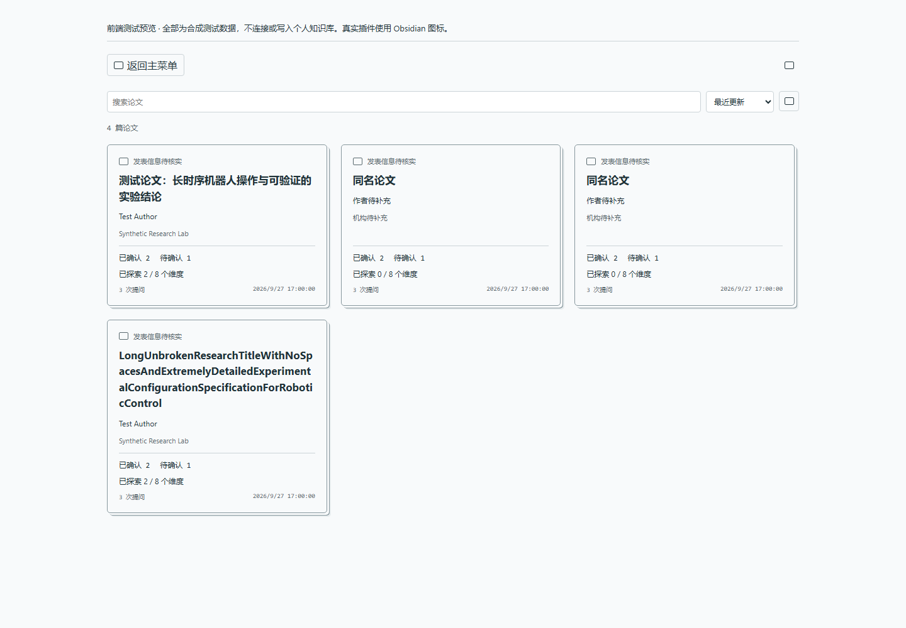
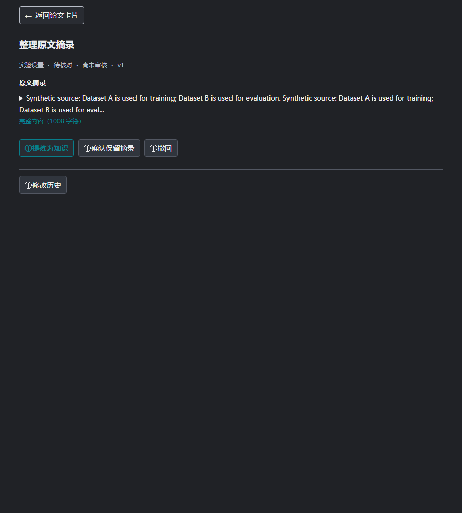
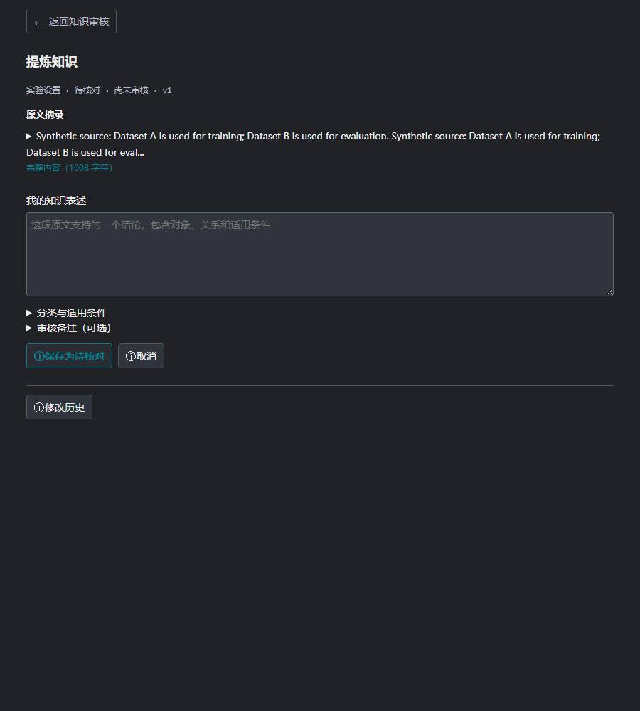

AuxBrain v0.11.2 个人论文知识库
从主面板进入
点击 查看数据库 打开按论文组织的卡片。每张卡片对应一篇论文，单色、边缘伪 3D 样式；列表可搜索、排序和翻页。初次安装是个人空库，不会带上开发者的论文或测试数据。原关系图仍可从 查看原知识图谱 进入。
【插图位置 2：卡片入口说明之后。以下为 0.11.2 组件与虚构论文数据的浏览器验证图，不是用户数据库截图。】

一篇论文的三个视图
| 视图 | 内容 | 注意事项 |
|---|---|---|
| 基本信息 | 标题、arXiv、作者、单位、版本日期、发表信息及来源 | 只展示已记录字段，空缺不等于未发表，不静默补齐 |
| 结构化知识 | 八个固定维度及其中的知识条目、状态、证据 | 候选不等于人工确认，允许修正或撤回 |
| 提问贡献 | 每次提问新增、补证、修正、首次披露、无新增等变化 | 未完成的后台整理不能当成零贡献 |
八个维度：研究背景、相关工作、相对改进、本文方案、实验设置、主要结果、消融实验、局限与未来工作。卡片逐步披露已有内容，不要求一次提问生成整篇总结。“已探索 X/8”是记录覆盖情况，不是论文理解完成度或答案准确率。
“档案关联提问”只统计关联该档案的问题；它与主面板历史总次数的口径不同，历史迁移和未关联问题会造成差异。
原文证据在哪里
- 打开论文卡片，进入 结构化知识。
- 顶部点击 查看原文证据，展开可用的证据条目；也可手动展开某条知识的 原文证据。
- 点击条目中的页码或原文定位入口，回到已关联的本地文档查看上下文。
- 若历史记录缺少坐标，在知识条目操作区点击 关联本地原文，选择对应本地文件完成核对。
没有证据时入口会不可用。关联操作并非任意指定位置：文件与文本快照需要匹配，正文变化、找不到句子或重复句歧义会阻止不可靠跳转。不要把同名 PDF 当成同一版本。
审核与记忆
为什么以前是一大段
默认后台采用原文摘录：把证据句段直接存成候选，不会为了提炼另行调用云端模型。它是一条有来源的材料，不一定已是简短知识。旧界面把这段材料作为“知识”和“证据”各展示一次，容易造成误解。
现在列表区分 原文摘录 与 知识表述，候选状态显示 待核对。超过 240 字符的内容默认折叠，只展示截取的开头；这是原文预览，不是自动摘要，不会删除数据库里的全文。
整理一段摘录
点击有边框的 整理这段摘录 按钮。原文只展示一次，长段可以展开全文。
【插图位置 3：整理入口说明之后。0.11.2 组件与虚构原文，不是真实论文。】

- 提炼为知识：进入单个主要输入框“我的知识表述”。对于长段原文，输入框留空，写下一个有原文支持的结论，保留必要条件，不必重复粘贴全文。
- 确认保留摘录：明确希望保留完整引用时使用，不把它伪装成一句提炼结论。
- 撤回：不想保留为有效知识时使用，历史仍然保留。
【插图位置 4：提炼输入框说明之后。0.11.2 组件、空白输入框与虚构原文。】

分类、适用条件和备注放在折叠区域，原栏目和条件默认保留。点击 保存为待核对 创建修正条目；旧条目撤回但不删除。新表述仍需单独确认，不因为保存就获得人工认可。
确认的是什么
已有知识表述通过 核对这条知识 进入。核对的是这条表述是否有证据支持、归属栏目是否正确，以及对象、训练或评测阶段、数据集、平台、数字和适用条件有没有被扩大或混淆。
正确时选择 确认这条知识 → 确认并保存。不准确时选择 修改表述；只确认自己核对过的内容，不代表为整篇论文的科学有效性背书。
通过提问整理出的内容可以先作为候选保留，但不是自动认可。核对原文后进行确认、修正或撤回。发生版本冲突或网络结果不明时，先重新读取当前状态，不要盲目重复写入。
AuxBrain 可在同一论文版本的后续问答中使用符合条件的已确认知识；撤回或过期条目不继续作为有效记忆。不是无条件把整个个人库加入每个问题，也不意味着候选回答已变成确定事实。
默认后台整理采用本地摘录，独立于前台 LLM 下拉选项。后台 LLM 整理需要单独启用与授权，详见 服务商与隐私。